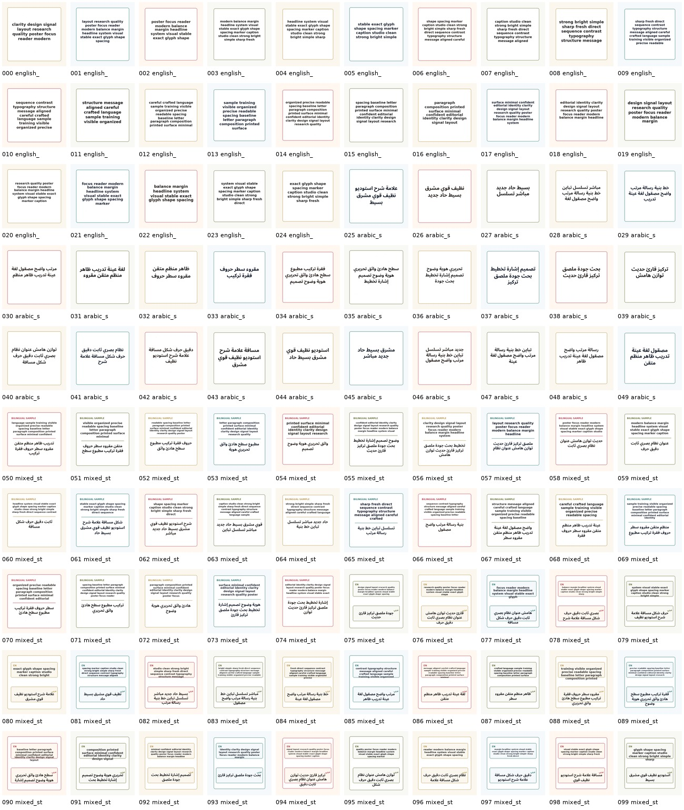
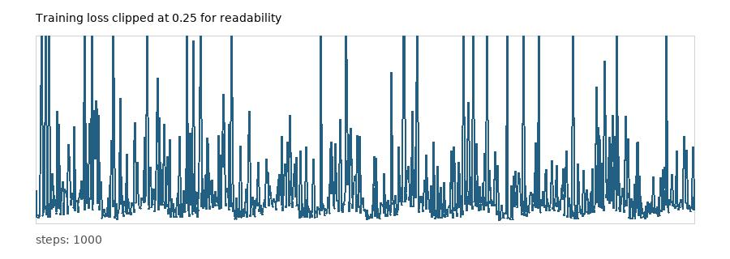
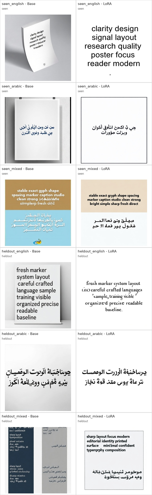

Qwen Text LoRA Finetune Report
Small controlled LoRA experiment on 100 synthetic text-poster images. The follow-up dataset forces English targets into the 10-20 word range and keeps Arabic targets shorter so the glyphs remain visually inspectable at 512px.
Training Setup
Model: Qwen-Image-Edit-2511 used as text-to-image through the shared Qwen Image transformer. Training resolution: 512x512. Adapter: rank 16 attention LoRA on Q/K/V/output projections. Trainable parameters: 29,491,200. Steps: 1000. Learning rate: 5e-05.
Saved adapter: pytorch_lora_weights.safetensors
Result Summary
This run still does not solve Arabic text rendering. The LoRA learns the synthetic poster prior and can copy a seen 10-word English target cleanly, but held-out long-English text is mixed and Arabic outputs do not reliably preserve exact glyph identity or word order.
The main evidence is visual: compare the base and LoRA columns below. The English cases now use 10-20 word targets. The LoRA improves the seen English case, but it does not prove robust generalization to unseen long text. Arabic remains the harder failure case even though Arabic appears in 75 of the 100 training records.
Why Arabic Did Not Learn
This is not just a prompt issue. The local renderer has no native complex text layout support (raqm, fribidi, and harfbuzz are unavailable), so the dataset script pre-shapes Arabic before drawing. That gives readable Arabic pixels, but the diffusion model still has to learn a difficult mapping from logical Arabic prompt tokens to cursive connected glyph pixels.
With only 100 images, a small attention-only LoRA mostly learns layout, contrast, and memorized/simple text priors. Arabic needs more signal: many more rendered lines, multiple fonts and sizes, repeated exact-copy probes, OCR/text-recognition loss, and likely LoRA/full finetuning on text-sensitive transformer layer bands rather than only generic attention projections.
Dataset Contact Sheet

Training Loss
Final loss: 0.053585; mean of last 20 logged steps: 0.036148. The curve is noisy because every step samples a different image and noise timestep.

Before / After Generations

Evaluation Prompts
| ID | Type | Prompt |
|---|---|---|
| seen_english | seen | Create a clean white poster with the exact English text "clarity design signal layout research quality poster focus reader modern". |
| seen_arabic | seen | Create a clean white poster with the exact Arabic text "بحث جودة ملصق تركيز قارئ حديث توازن". |
| seen_mixed | seen | Create a clean bilingual poster with the exact English text "stable exact glyph shape spacing marker caption studio clean strong bright simple sharp fresh direct" and the exact Arabic text "ثابت دقيق حرف شكل مسافة علامة شرح". |
| heldout_english | heldout | Create a clean white poster with the exact English text "fresh marker system layout careful crafted language sample training visible organized precise readable baseline". |
| heldout_arabic | heldout | Create a clean white poster with the exact Arabic text "رسالة مرتبة واضحة مصقولة لغة عينة تدريب ظاهر". |
| heldout_mixed | heldout | Create a clean bilingual poster with the exact English text "sharp layout focus modern editorial identity printed surface minimal confident typography composition" and the exact Arabic text "وضوح حاد مباشر منظم متقن مقروء". |
Recommendation
For a real Arabic poster fix, this result says the pipeline is working but the dataset is too small and too synthetic. Next run should use thousands of high-quality rendered poster crops, include exact OCR/recognition scoring, and likely target the non-catastrophic text-sensitive layer bands from the ablation probe rather than only generic attention LoRA.
For full finetuning, use a maintained Qwen-aware trainer instead of this small diagnostic trainer. The current best fit I found is DiffSynth-Studio, which has explicit Qwen-Image-Edit-2511 full-training and LoRA scripts. Musubi is also serious and documents Qwen-Image/Edit LoRA plus full finetuning, but it states that some Qwen training hyperparameters are still uncertain. My recommendation is: use DiffSynth for full DiT finetuning, keep this local script for small controlled probes only.
Decision: full finetuning can plausibly improve Arabic and long English rendering, but only with a much larger text-focused dataset. Full finetuning on 100 synthetic images would probably overfit the poster style and damage general image/edit quality.
Full recommendation document: FULL_FINETUNE_RECOMMENDATION.md